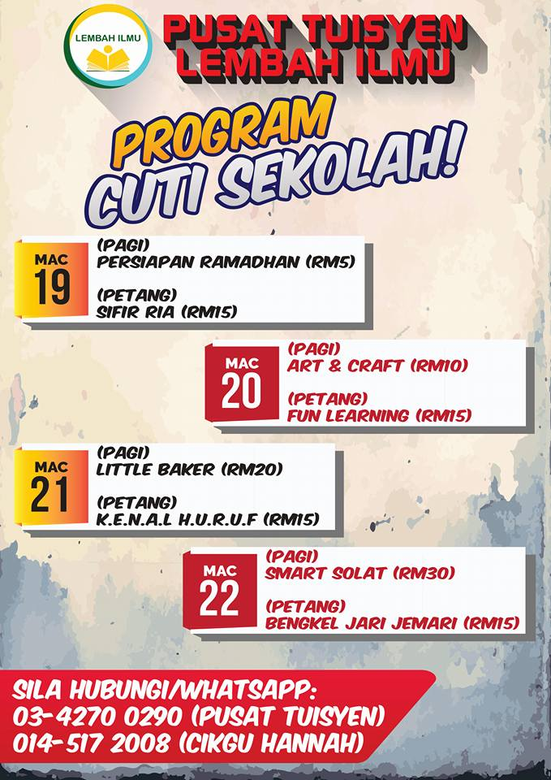
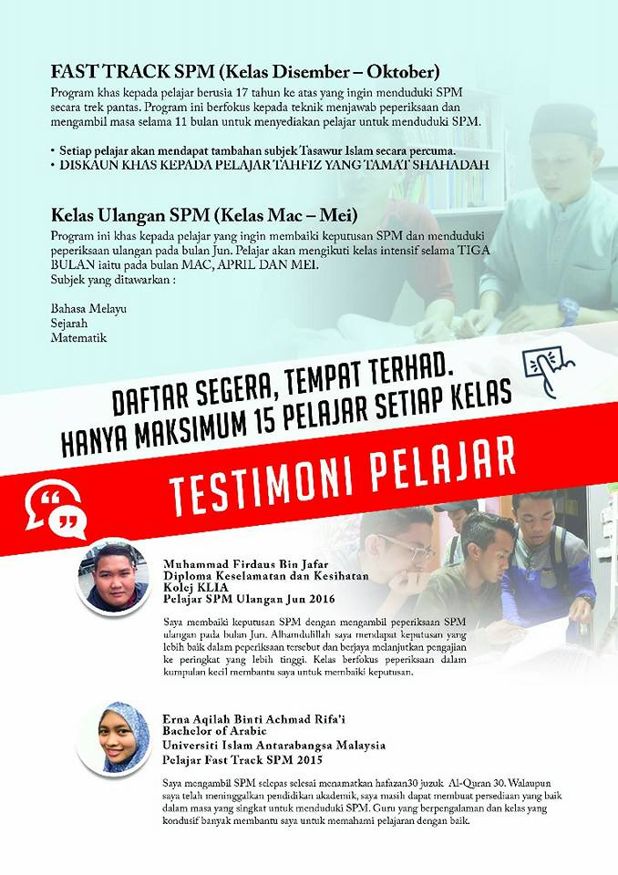

Latar Belakang
Fast track SPM Lembah Ilmu ini mula diperkenalkan oleh pengasas Pusat Tuisyen Lembah ILmu, Puan Naimah bt. Muhammad pada tahun 2013 dengan bilangan pelajar seramai 8 orang. Idea dan usaha ini dicetuskan atas kesedaran bahawa pelajar-pelajar yang mengambil tahfiz juga boleh menyambung pelajaran ke peringkat lebih tinggi selepas mengambil sijil SPM. Sebahagian besar pendidik adalah terdiri daripada bekas guru yang pernah mengajar disekolah kerajaan dan swasta dan sebahagian kecil terdiri daripada tutor sepenuh masa yang telah diberi pendedahan tentang subjek dan format peperiksaan serta teknik mengajar.
Pencapaian
Membantu pelajar dari kategori berikut untuk mendapat sijil SPM dan seterusnya melanjutkan pelajaran ke peringkat lebih tinggi; Lepasan madrasah dan pondok, pelajar SPM ulangan, pelajar tercicir persekolahan, bekerja sambil belajar
Sejarah Penubuhan
Perkhidmatan yang ditawarkan
FAST TRACK SPM
Kelas Fast Track SPM bagi pelajar yang ingin mengambil SPM |
PRA-SPM
Kelas persediaan dari awal untuk pelajar menghadapi SPM |
HOMESCHOOLING
Aktiviti pembelajaran dilakukan dirumah sendiri |
I-LEARNING
Kelas pemulihan bagi pelajar yang mempunyai masalah pembelajaran |
KAUNSELING
Sesi bimbingan dan kaunseling dari kaunselor berdaftar |

SEMINAR
Perkhidmatan seminar dan teknik menjawab peperiksaan sebenar |
|
ANNOUNCEMENT




❮
❯
EVENT & NEWS
|